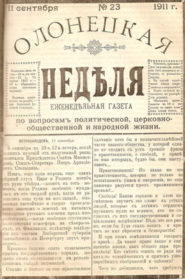
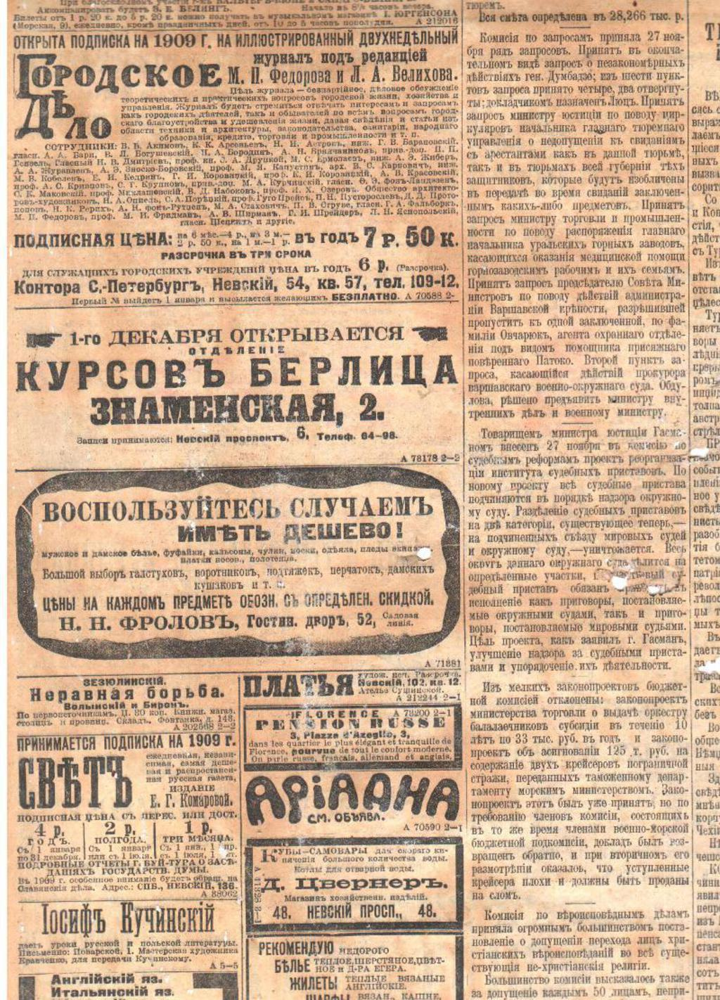

Газета "Неделька" и о ней.
 
17 лет мы рассказываем читателям о новостях Клина и Подмосковья, предоставляем информацию о товарах и услугах наших рекламодателей. История издательского дома началась 9 августа 1997 года, с выходом первого номера газеты «Неделька», в котором было 18 рекламных модулей и 7 частных объявлений. В 1998 году «Неделька» издается в г. Можайске. Обе газеты небольшого, А4 формата, а информация в них занимает всего 4 полосы. В 2003 году стартует новый проект – газета «Клинская Неделя», а в 2010 году выходит первый выпуск газеты «Ваш рекламный бюджет». В 2009 году список изданий пополняют тематические глянцевые журналы.
Формируется коллектив редакции, возникают новые структурные подразделения: служба информации, верстки и дизайна, служба распространения, финансовая служба, рекламный отдел, отдел туризма и отдыха. Сейчас в издательском доме работает более 60 человек. Это дружный коллектив увлеченных людей, профессионалов своего дела. Мы дорожим своей репутацией и партнерскими отношениями, умеем ценить свое и Ваше время. Только свежая проверенная информация. Реклама, которая работает. Качественно, оперативно, интересно! Спасибо, что Вы с нами!
Наши достижения 2013 Участие в Деловом форуме СМИ – выставке представителей региональной прессы. Награждение знаком отличия «Золотой фонд прессы – 2013». Сайт Неделька-Клин.Ру –становится лауреатом в номинации «Лучший сайт печатного издания». 2012 Газета «Клинская неделя» награждается знаком отличия «Золотой фонд прессы-2012». В связи с 15-летием, издательский дом «Вико» награжден почетной грамотой Союза журналистов Подмосковья
за участие в жизни журналистского сообщества региона и вклад в развитие средств массовой информации Московской области. 2011 Редакция газеты «Клинская неделя» получила почетный диплом Всероссийского конкурса «Хрустальная матрешка-2011». Участие в семинаре «Продажа рекламных возможностей. Экспертные продажи». 2010 Журнал «Бизнес-Платина» признан лучшим печатным СМИ, освещающим новости и проблемы малого предпринимательства района. Изданию присужден диплом конкурса.
2009 Награждение коллектива газеты «Клинская неделя» грамотой военного комиссара ОВК г. Клин за ведение активной работы по военно-патриотическому воспитанию граждан. 2008 Участие во Всероссийской конференции «Информационное партнерство: Власть-СМИ-Общество» (белее 300 изданий из всех регионов России). 1 место в номинации «Народные конкурсы». 2007 «Клинская неделя» стала соучредителем «Ассоциации издателей Подмосковья».
2006 Газета “Клинская Неделя” – лучшее рекламно-информационное издание года, осуществляющее поддержку предпринимательства в Клинском муниципальном районе. Награда Фонда поддержки малого предпринимательства района. Участие во всероссийском фестивале прессы в г. Дагомысе, приз от “Экономической газеты” за лучшее освещение экономической тематики.